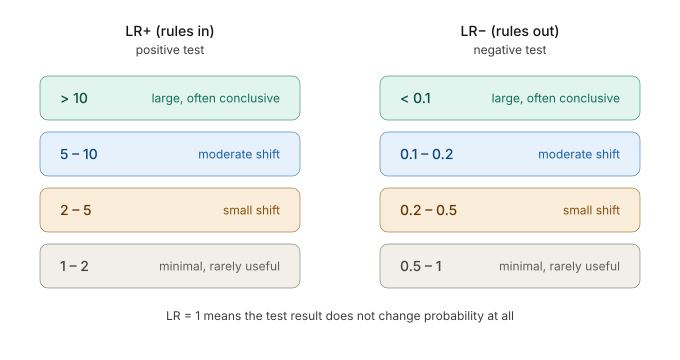

Positive likelihood ratio
LR+ describes how much a positive test increases the probability of disease. Larger values create stronger upward movement.
LR+ = sensitivity / (1 - specificity)
Likelihood ratios describe how much a test result should move your estimate. They are useful because they can be applied to any starting probability.
LR+ describes how much a positive test increases the probability of disease. Larger values create stronger upward movement.
LR- describes how much a negative test decreases the probability of disease. Smaller values create stronger downward movement.

Examples from chest pain and MI: